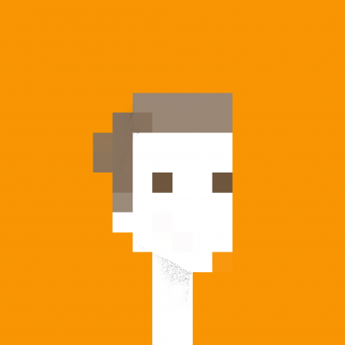

The résumé of Pete Schaffner.
Experience
Web lead, developer & designer
2013 — present
- Established a Git workflow and CSS/JavaScript style guides
- Lead HTML/CSS development
- Wrote Angular directives
- Decoupled current API and web client
- Lead design and development of 2.0 web client (currently unreleased)
- Scaffolded and designed modular app architectures with an emphasis on highly decoupled components that could be easily reused/tested
- Interviewed prospective web employees
- Managed owner expectations & acted as a designer/developer proxy
- Wrote [English] promotional copy and proofread other marketing texts
Conceited Software
Designer & partner
2013 — present
Designer & web developer
2010 — 2013
- Created IronGate's digital design department and defined our workflow/standard for web-based projects
- Led corporate, e-commerce, application and informational website projects
- Performed website, software and system training for clients and IronGate employees
- Provided technical support to clients in the realm of content management, server administration, programming and email marketing
- Troubleshot and debugged an array of technical issues with clients
- Managed client/project manager expectations throughout the life of projects
- Worked in quick, iterative cycles to prototype, ship and refine online projects
- Acted as liaison between clients, art directors and back-end developers
- Adopted company IT and networking responsibilities
- Created an online publication for Lumina Foundation, a higher education client, giving particular attention to a smooth and intuitive user experience
- Designed an iOS application for Lumina Foundation and developed the embedded webviews
- Designed and developed Lumina Foundation's digital/print annual report
- Designed and developed a sandboxed, facility map for Franciscan St. Francis Health network
- Designed and prototyped an interactive map for Wayne County, IN
Freelance/open source
Designer & developer
2006 — present
Lead student designer
2008 — 2010
- Designed the department logo
- Initiated a cohesive re-branding campaign for show/event artwork and promotional material
- Designed show/event artwork and promotional materials for 2009 — 2010 and 2010 — 2011 seasons
- Redesigned 2009 — 2010 season brochure and worked with University Marketing and Communications to resolve brand inconsistencies
Skills
Programming/technical
- HTML, JavaScript, CSS, Ruby, PHP
- Jade, Haml, Rework, Stylus, Sass, CoffeeScript
- Node.js, Express, Sinatra, component(1)
- MVC, TDD, BDD
- Git, Vim
- Efficiency fanatic and command line advocate
Operating Systems
- Proficient in OS X and iOS
- Comfortable with Windows XP/Vista/7
- Familiar with Ubuntu Linux distro
Design
- Photoshop, Illustrator, Flash, InDesign, After Effects
- Sketch, Pixelmator (I try to use Adobe alternatives when I can)
- Rapid prototyping [in HTML/CSS/JS/Photoshop/pen & paper]
- Domain-driven and domain language design
- Establishing and enforcing design/development workflows
- Bridging the gap between designers and engineers
Fine Arts
- Ceramics, sculpture (mixed-media)
- Drawing, woodcut, intaglio (aquatint), painting
Education
Bachelor of Fine Arts, Visual Communication
2010
- 3.8 GPA
- Dean's List for 8 consecutive semesters
- Graduated magna cum laude from the Honors College